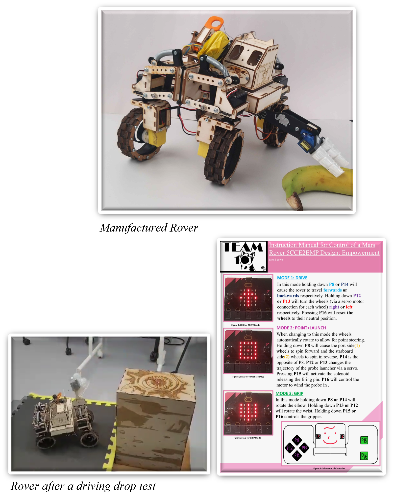

Bioinspired Mars
Rover
Overview
Duration: 6 weeks
Position: Team Manager, Designer, Control Engineer
Time: Winter 2023 (2nd Year)
Humans are preparing for space exploration and could make a new home on other planets. Whilst this presents its own challenges in terms of agriculture, space laws, and general rocketry, how will humanity traverse the unstructured environments of other planets?
For this project, we were asked to design a scaled-down remote-controlled rover that could be a safe transportation method for humans on Mars.
Design Requirements: Must fit within an A4 build space, fitted with a Probe Launcher, the cabin must experience an acceleration of less than 10G during a drop test, and finally it must be able to pick up objects of varying mass and complexity.
Design Process

As a team, we investigated various biomechanical systems that we could use to shape the design of the rover, from the compliance of an elephant's trunk for increased gripping capability, to the mechanical advantage of a praying mantis shrimp when launching the probe. As the project manager, I ensured continued communication with the different engineers in my team to ensure the various systems worked symbiotically.
My role as a designer was to design the cabin and, later on, the cat’s tail, which would act as a counterweight during a driving drop test. The cabin was complete with mass attachment points to decrease the acceleration of the cabin, as this is where the accelerometer would be attached. Whilst not essential to the functionality, I designed the aesthetics of the rover, swappable faces for the cabin etc. There is more detail in the linked video on the next page about the individual components.
My role as joint control engineer was to create improved functionality of the rover through the control scheme. Out of the cohort it had the best and most unique control. This was because of the individual servos per wheel, so the angle of each wheel could be controlled, thereby making turning on the spot incredibly easy, owing to superior manoeuvrability when compared to other rovers.
End Result
The final demonstration day wasn’t as successful as the team had planned; this was due to the overengineered aspect of the “Cat’s tail”. Whilst the rover was successful in the incline driving drop test and the cabin experienced an acceleration of less than 10G, the added mass caused the rover to be slower overall. As all the test sections were timed, the rover was unable to pick up all the objects and traverse the obstacle course within the allotted time, yet it was perfectly capable of doing so 2 weeks prior to the final submission. I mention this as it was a valuable lesson in design trade-offs and whilst aiming for 100% is good, doing so at the risk of other factors is unacceptable. I remember this lesson now whenever I am designing or managing a design project.Overall, this project improved my project management skills as the team worked incredibly efficiently, due to my ability to include everyone as an active part of the team where their voice would be heard. I was also able to get more creative with the different designs and drawings I made for the team. Especially the final project video which I made, edited, drew the pictures, and wrote the scripts for (achieving a mark of 95%).